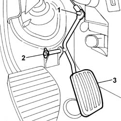

1068A14 ACCELERATOR PEDAL - R + R
- Path
- Procedures > 10 ENGINE > 1068 ACCELERATOR CONTROLS > 1068A ACCELERATOR PEDAL CONTROL > 1068A14 ACCELERATOR PEDAL - R + R
- Kind
- repair procedure (removal / refitting; the operation number is the code)
- Applies to
- engines: 2.0 16v, 2.0 16V JTD, 2.2 16V JTD; all production periods
- Interactive page
- https://sloeber94.github.io/elrnDB-fUlss/en/#/179007070
Applies to: engines: 2.0 16v; all production periods
 Removing
Removing
 Refitting
Refitting1. Undo the clip securing the accelerator cable to the pedal.
2. Undo the clip securing the pedal to the bracket.
3. Remove the accelerator pedal.

Applies to: engines: 2.0 16v; all production periods
Refitting
Removing- Position the accelerator pedal in its seat.
- Position the pedal retaining clip.
- Do up the clip securing the accelerator cable to the pedal.
Applies to: engines: 2.0 16V JTD; all production periods
Removing
Refitting1. Release the clip fastening the accelerator cable to the pedal.
2. Release the clip fastening the pedal to the bracket.
3. Remove the accelerator pedal.
Applies to: engines: 2.0 16V JTD; all production periods
Refitting
Removing- Place the accelerator pedal in position.
- Position the pedal retaining clip.
- Connect the clip fastening the accelerator cable to the pedal.
Applies to: engines: 2.2 16V JTD; all production periods
Removing
Refitting1. Release the clip fastening the accelerator cable to the pedal.
2. Release the clip fastening the pedal to the bracket.
3. Remove the accelerator pedal.
Applies to: engines: 2.2 16V JTD; all production periods
Refitting
Removing- Place the accelerator pedal in position.
- Position the pedal retaining clip.
- Connect the clip fastening the accelerator cable to the pedal.